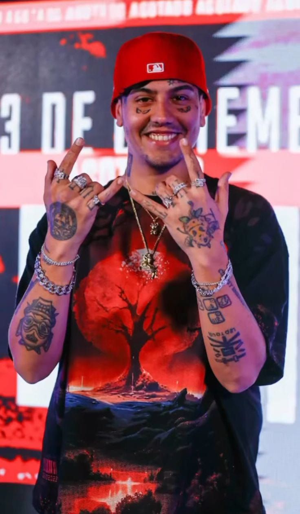
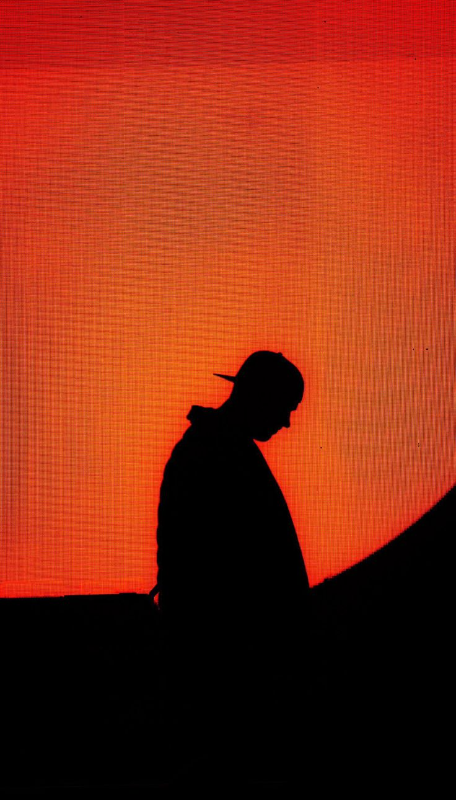
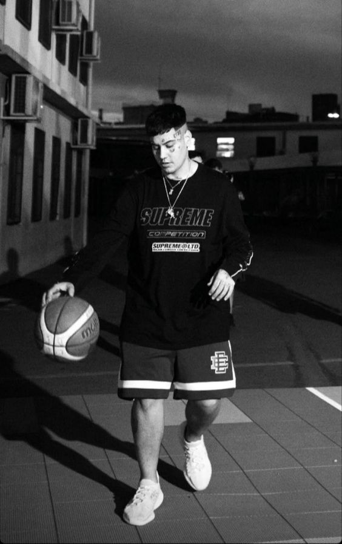

Sus comienzos
Mauro Ezequiel Lombardo Quiroga o mejor conocido como duki nació el 24 de junio de 1996 en Almagro, Buenos Aires, siendo el segundo hijo de Sandra Quiroga Pérez y Guillermo Lombardo Ninaquispe, Mauro se crio en La Paternal luego de que sus padres se divorciaran, y a pesar de haber concurrido a la escuela, jamás acabó la secundaria, mas tarde contaria en una entrevista que no se sentia interesado por la escuela y que no lograba conectar con nadie.
Durante su infancia Mauro, tuvo muchas estimulaciones musicales por parte de su familia, escuchando todo tipo de géneros, incluyendo rock nacional, salsa, música disco, pop latino, y punk rock. Antes de descubrir el rap, Lombardo era fanático del garage rock y su banda preferida era Linkin Park, por lo que su deseo de pequeño era formar un grupo de rock. Fue a través de Eminem y 50 Cent que empezaría a desarrollar un largo interés por el hip-hop y el rap.
Luego de dejar la escuela, Mauro trabajó como repartidor de comida y en una farmacia. El freestyle le llamó la atención luego de ver una batalla de rap entre los longevos raperos Kodigo y Tata, en una competencia llamada A Cara de Perro del 2010, Poco tiempo después empezó a rimar sobre una base de rap y logró congeniar varias frases, motivandolo para practicar este tipo de estilo. Alrededor del 2012, Lombardo empezaría a incursionar en el mundo de las batallas de rap, concursando en diferentes competiciones de Buenos Aires bajo los nombres de "Wanakin" y, de manera definitiva, Duki.
Entre el 2013 y 2016 fueron sus inicios y el comienzo de su popularidad en las batallas de rap, En 2013, Lombardo participó en su primera batalla de rap, junto a otro rapero llamado Salva, en una competencia llamada Madero Free, donde salió victorioso ante los competidores Monto y Ambro. Lombardo recordaría esa batalla años después como "horrible y desastrosa, pero ganamos", luego comenzo a ir a distintas competencias de freestyle pero la mas importa de ellas y con la cual despego fue con "EL quinto escalon" donde participaria por primera vez en 2016 dando su nombre a concer de una manera muy rapida. Tras ganar esta competencia en Noviembre de 2016 daria su primer paso en su carrera musical sacando su sencillo "No vendo trap", el resto es historia.